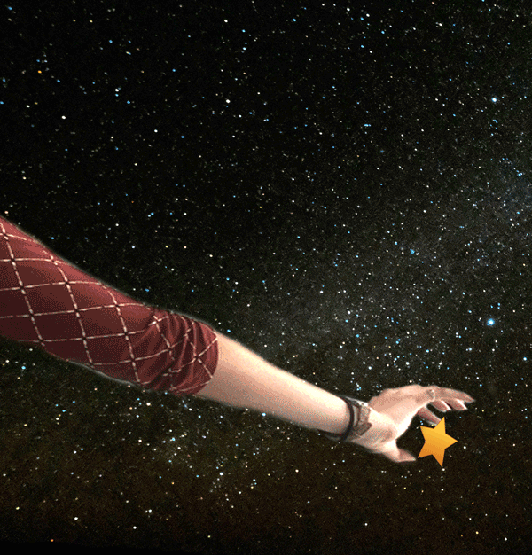
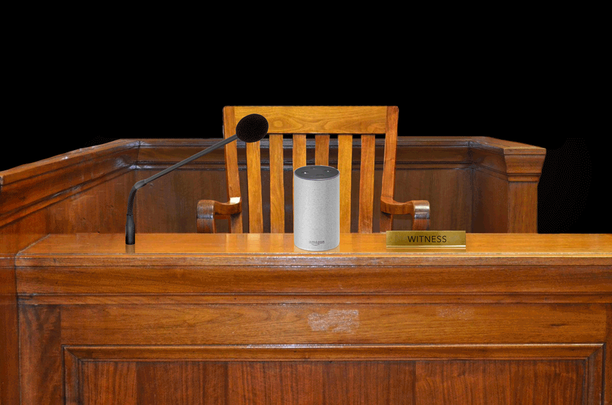
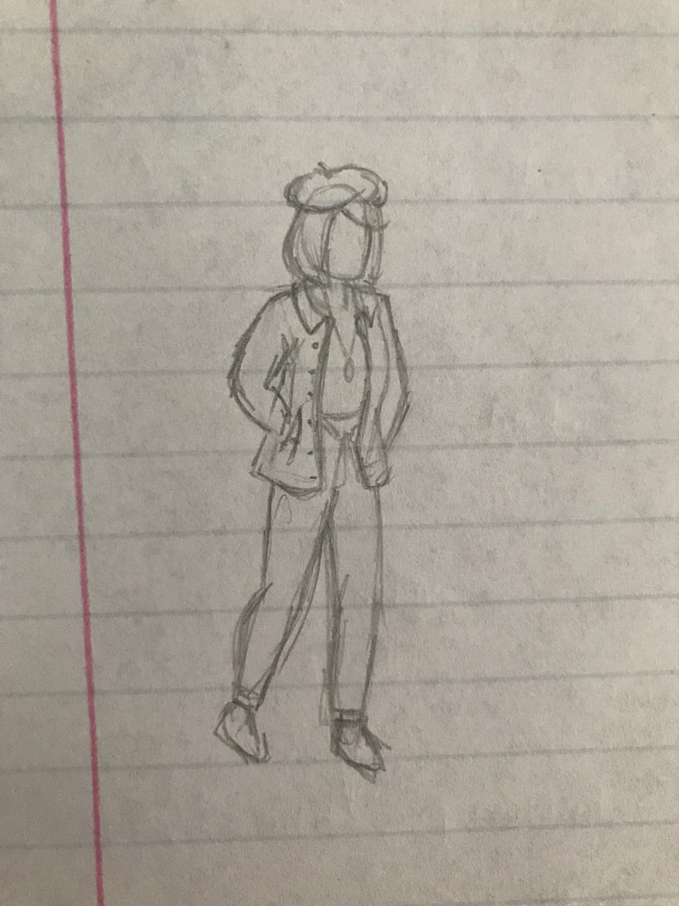

December 4, 2019
Project 4: Timeline

I enjoyed learning about the different ways time has been measured and concpetualized across cultures while researching for this project. Accurate time-keeping is something we often take for granted nowadays, but the technological development to where we are now has been advancing piece by piece for milennia. I developed the color scheme from an astrological clock in Europe, which helped me connect the very varied time-keeping devices into a coherent illustration. I decided to contain the timeline around a sundial, hourglass, and clock to hint at the similarities between one of the oldest forms of time-keeping in existence and the design of the modern clock.
PDF fileNovember 4, 2019
Project 3: Article Illustrations
Tesla’s Autopilot Could Save the Lives of Millions, But It Will Kill Some People First
"The complicated ethics of Elon Musk’s grand autonomous vehicle experiment."
Bloomberg Businessweek
In Article PDF
In Article GIF
Amazon Sellers Are Using Facebook Chatbots To Cheat Their Way To Good Reviews

"Facebook ads touting “free” products are actually fake review programs commissioned by Amazon sellers."
Buzzfeed News
In Article PDF
In Article GIF
Amazon's Alexa may have witnessed alleged Florida murder, authorities say

"Adam Reechard Crespo is charged with murder in connection to the July death of his girlfriend, Silvia Galva, in Hallandale Beach."
NBC News
In Article PDF
In Article GIF
October 2, 2019
Project 2: Icons

The most challenging aspect of this project was keeping the icons simple and scalable, yet still interesting and visually appealing. Once I came up with the rounded rectangle theme, it became easier. Some common elements tying the icons together as a set are: shapes simplified to rectangles, rounded corners, consistent spacing between rectangles, diagonal rectangles, single open red rectangle, stroke color and weight, and consistent colors.
September 4, 2019
Project 1: Isometric Avatar

Using the isometric grid, I used Adobe Illustrator to create this avatar. Typically in Illustrator, I use the pen tool but I opted for the pencil tool for this project because I wanted more natural, flowing lines to give it a more organic feel. I tried to stick to a muted color palette because I usually wear those colors, and it gives the design a more cohesive look. My favorite part is the little bit on top of the beret which I drew as a tiny floating circle.
